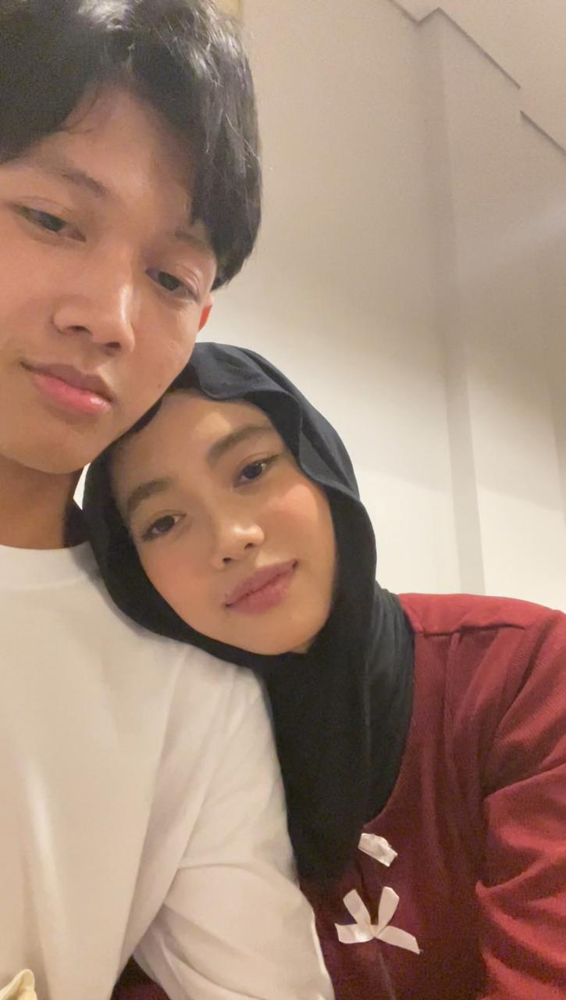
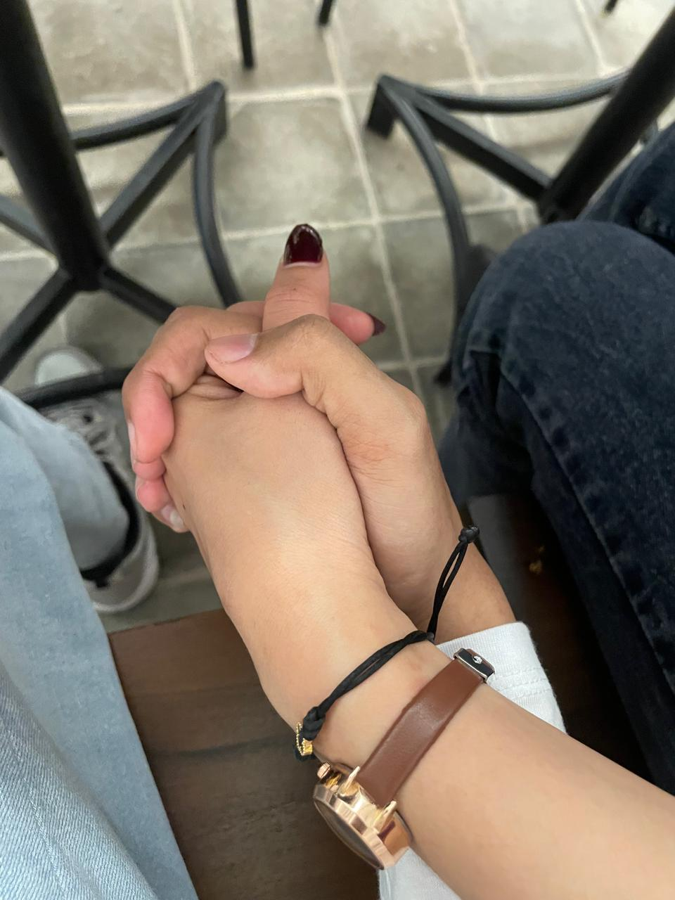
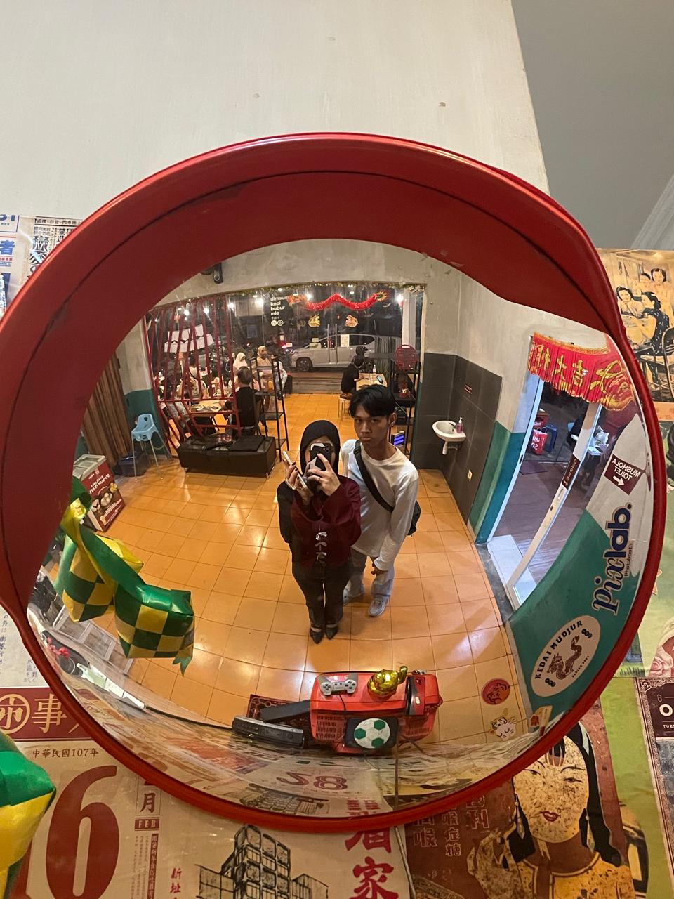

Kamu selalu sehat
Semoga tubuhmu selalu kuat dan kamu punya cukup waktu untuk menikmati hal-hal kecil yang membuatmu bahagia.
sebuah hadiah kecil dari jarak yang jauh
18 Agustus 2026 · hari yang ingin aku buat sedikit lebih istimewa
hari ini tentang kamu
Mungkin aku belum bisa berdiri di sampingmu tepat saat hari ini dimulai. Tapi kalau ada satu hal yang ingin aku pastikan, itu adalah kamu tahu bahwa ada seseorang yang dengan tulus mendoakanmu dari kejauhan.
Jadi kali ini, aku membuat tempat kecil yang bisa kamu buka kapan pun kamu ingin mengingat bahwa hari ulang tahunmu pernah dirayakan dengan cara yang sedikit berbeda.
tentang jarak
Kita mungkin lebih sering melihat satu sama lain lewat layar. Kadang hanya bisa saling menunggu kabar, saling menghitung waktu, dan menyimpan rindu di tempat yang tidak bisa disentuh.
Tapi setidaknya kita punya satu bukti bahwa jarak tidak selamanya menjadi akhir. Ada hari ketika kita benar-benar berada di tempat yang sama. Ada tangan yang akhirnya bisa digenggam. Ada foto yang tidak lagi diambil dari dua layar yang berbeda.
satu pertemuan
Tidak perlu banyak cerita. Beberapa foto sudah cukup untuk mengingatkan kita bahwa hari itu pernah benar-benar terjadi.






yang aku harapkan untukmu
Semoga tubuhmu selalu kuat dan kamu punya cukup waktu untuk menikmati hal-hal kecil yang membuatmu bahagia.
Semoga apa pun yang sedang kamu perjuangkan pelan-pelan menemukan jalannya, bahkan ketika sekarang jalannya belum terlihat.
Semoga kamu tidak perlu berubah menjadi orang lain hanya agar dunia menyukaimu. Tetap jadi Mawarni yang aku kenal.
Semoga tahun ini membawa lebih banyak kabar baik, lebih banyak tawa, dan lebih sedikit malam yang membuatmu terlalu banyak berpikir.
Semoga kita tidak lagi harus merayakan hari-hari penting dari balik layar. Semoga nanti kita punya lebih banyak hari seperti di foto-foto tadi.
next chapter
Semoga nanti ada lebih banyak foto yang bisa kita ambil tanpa harus memikirkan kapan kita akan bertemu lagi.
Semoga ada lebih banyak tempat yang kita datangi, lebih banyak cerita yang kita buat, dan lebih banyak hari biasa yang ternyata menjadi kenangan paling berharga.
Dan semoga, di antara semua hal yang berubah,
kita masih memilih satu sama lain.
sebelum kamu pergi...